Практичний досвід · журнал «ДентАрт» 2021 №2
Реставрація контактних поверхонь бічних зубів. Частина І
RESTORATION OF THE CONTACT SURFACE OF POSTERIOR TEETH. PART І
У щоденній практиці лікарі-стоматологи стикаються з різними клінічними ситуаціями, зокрема з таким складним завданням, як побудова контактних поверхонь бічних зубів.
Детально розроблені протоколи препарування, техніки внесення композитних матеріалів і пошарового моделювання тим чи іншим матеріалом та інструментом запропонували різні автори, однак мало хто приділяє увагу такій делікатній роботі, як побудова прогнозовано щільного контактного пункту бічних зубів. Композитна реставрація зубів не просто має на увазі лікування карієсу, але й вимагає відновлення природної морфології, функції та естетики зуба.
Для відновлення проксимального контакту, гарного обтискування матрицями поверхні зубів були розроблені різні матричні системи і кільця, але на моє скромне переконання, жодна з них не впорується із завданням на всі 100%, адже кільця стандартизовані, а однакових клінічних ситуацій у практиці стоматологів не зустрічається, як і анатомічно однакових зубів.
Сепараційні кільця не лише допомагають добре притиснути матрицю до поверхні зуба, але й дають можливість розклинити зуби, що для побудови щільного контакту просто необхідно.
Поскільки кільце задає контур матриці і надає їй певної форми, то застосування кільця може не тільки не допомогти в побудові, а й ускладнити її, надавши контактній поверхні заздалегідь неблагополучної форми.
Таким чином, для отримання прогнозованого профілю проксимальної поверхні потрібно, щоб кільце спочатку задало правильну форму і контур матриці, тому слід його індивідуалізувати і тим самим поліпшити обтиснення матриці, уникнувши її деформації. Також рекомендовано використовувати більш жорсткі секційні матриці.
Клінічний випадок
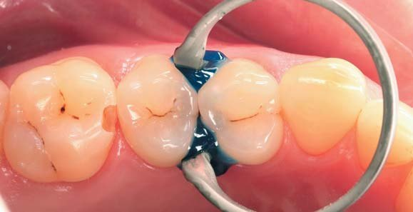
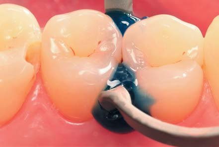
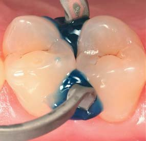
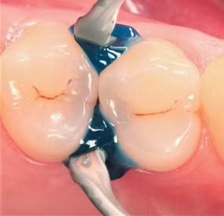
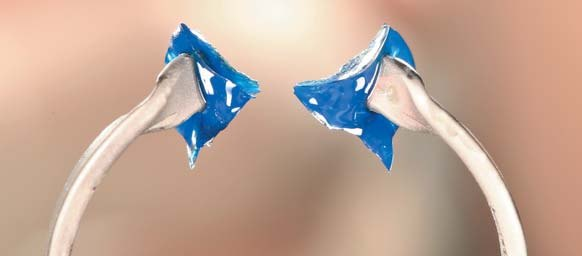
Початкова клінічна ситуація: карієс дентину зубів 27, 26, 25, 24.
Скарги: застрявання їжі, короткочасні болі як реакція на кисле, солодке, холодне, гаряче, що відразу минають після усунення подразника.
Об'єктивно: в зубі 27 порушено крайове прилягання пломби, у зубах 26 і 25 карієс на мезіальній поверхні, у зубі 24 на дистальній поверхні – прихований каріозний процес. Було вирішено виготовити індивідуалізоване кільце для відтворення контактного пункту між зубами 24 і 25, назване Custom Ring.
Нам для цього будуть потрібні: кільце з плоскими щічками (найбільше мені подобаються кільця Bitine Ring, Dentsply Sirona) круглої та овальної форми, кільце ТОР ВМ «Дельта», рідкий рабердам Peroxidam (Latus), дерев'яні клини, ПТФЕ стрічка, середні або великі металеві тверді секційні матриці товщиною 35-50 мк, макетний ніж. У цьому клінічному випадку використані матриці ТОР ВМ.
Підготовка до роботи: перед початком препарування припасовуємо кільце до поверхонь зубів. Якщо воно добре адаптоване, знімаємо його і вносимо текучий рабердам. Не полімеризуючи його, надягаємо кільце назад і теж заливаємо зі зворотного боку рідким рабердамом, після чого співполімеризуємо обидві порції разом. У підсумку отримуємо кільце з індивідуалізованою формою проксимальних переходів на вестибулярну та оральну поверхні.
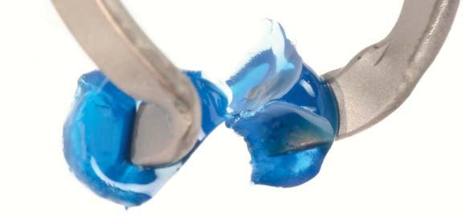
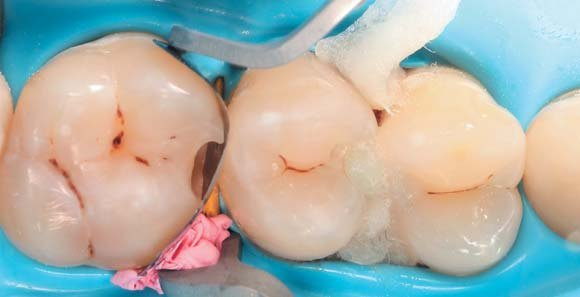
Далі виконується препарування каріозних порожнин. При ризиках розкриття або глибокого препарування дентину слід зробити ізоляцію за допомогою системи рабердам.
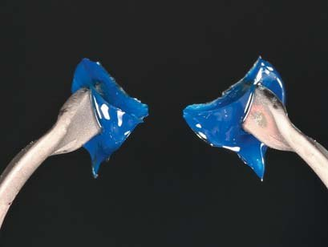
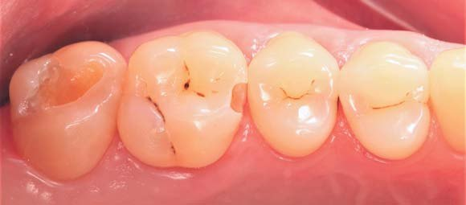
Можна виділити два варіанти дефектів проксимальних поверхонь: над- і під'ясенні дефекти. При під'ясенних дефектах необхідне почергове відновлення контактних поверхонь, бо потрібна ретельніша адаптація матриці у приясенній зоні ПТФЕ стрічкою і відновлення виконується без використання клина. Якщо ж дефекти над'ясенні, можна відразу переходити до встановлення матриць на двох зубах з їх адаптацією за допомогою дерев'яних клинів. Відновлення краще починати зі складніших дефектів, інакше матимемо проблему деформації матриці у приясенній зоні при роботі із зубом, у якого є під'ясенний дефект.
Потім слід доопрацювати кільце, а точніше додати до нього раніше заполімеризований рідкий рабердам. Ті частини рідкого рабердаму, які глибоко заходять на проксимальну ділянку, після полімеризації і зняття кільця слід прибрати за допомогою турбінного наконечника та алмазного бору з червоним маркуванням.
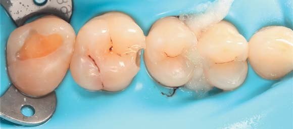
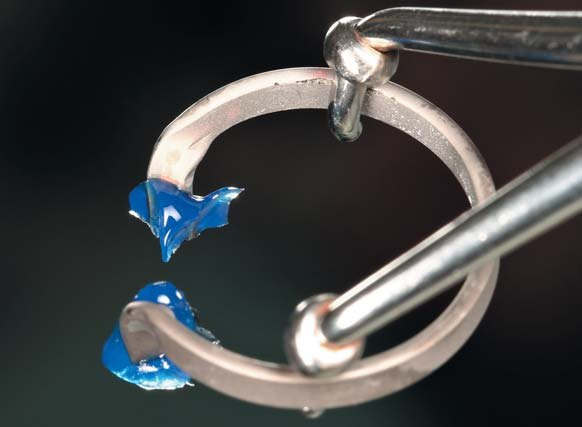
У цьому клінічному випадку контактні пункти відновлювалися по черзі, починаючи із зуба 26. Після адаптації матриці кільцем, клином і тефлоном були зроблені адгезивна підготовка адгезивом Optibond FL (Kerr) і відновлення контактної поверхні матеріалом Estelite Asteria (Tokuyama Dental).
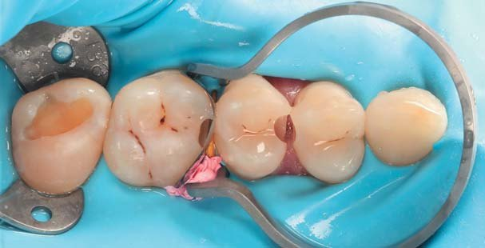
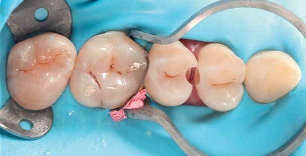
Потім ішов етап відновлення зуба 24. У під'ясенній зоні матрицю адаптували за допомогою ПТФЕ стрічки, після фіксації кільця зроблені додаткова адаптація матриці ПТФЕ стрічкою і відновлення зуба за тією ж схемою.
Після реставрації зуба 24 поверхня трохи доопрацьована малими дисками із синім маркуванням фірми ТОР ВМ.
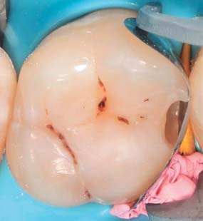
Далі зроблено адаптацію матриці до зуба 25 дерев'яним клином та індивідуалізованим кільцем. Зверніть увагу: матриці нікуди дітися, і вона згинається під задану кільцем форму.
Перевагою дерев'яного клина перед пластиковим є те, що його після розклинювання зубів легко можна обламати, якщо він заважає встановленню кільця в необхідній позиції.
Потім зроблено адгезивну підготовку та реставрацію контактного пункту зуба 24 композитним матеріалом Estelite Asteria (Tokuyama Dental).
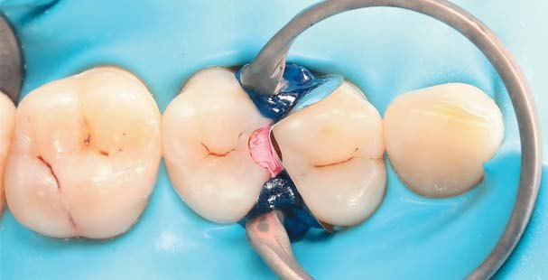
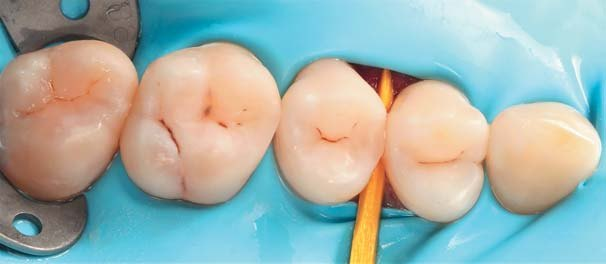
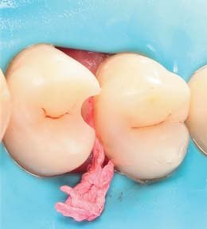
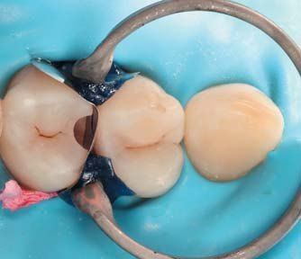
Після фінішної полімеризації проведено шліфування дисками малого діаметра ТОР ВМ із синім та зеленим маркуванням, полірування білою чашкою Kenda і коричневою Komet.
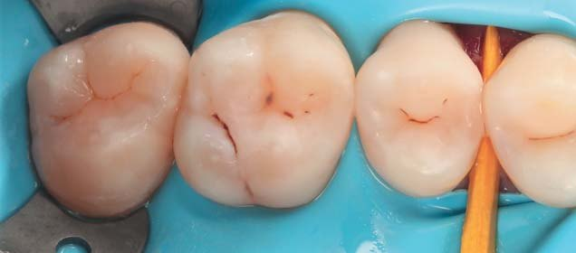
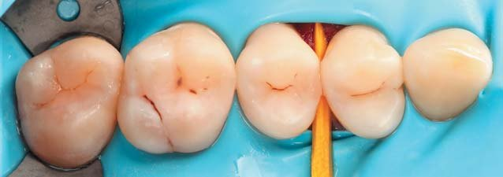
Висновки
Запропонований метод дозволяє прогнозовано і максимально наближено до природної анатомії відтворити втрачений внаслідок каріозного процесу контактний пункт між бічними зубами. Точність і якість зробленого відновлення слід перевіряти клінічно за допомогою флоса, лавсанової матриці, за рентгенівським або ж цифровим знімком. Важливі деталі методу: для того, щоб матриця не прогиналася під опуклий контур сусіднього відреставрованого зуба, слід спочатку доопрацювати гіперконтур відреставрованої проксимальної поверхні; використовувати тверді матриці, які не деформуються під контур сусіднього зуба, і звичайно ж, за необхідності застосувати індивідуалізоване кільце, яке ми назвали Custom Ring.
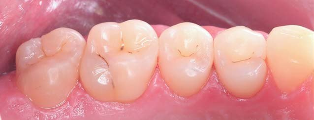
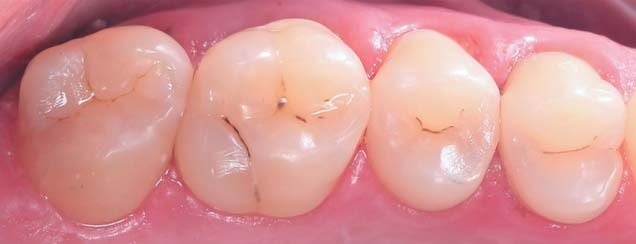
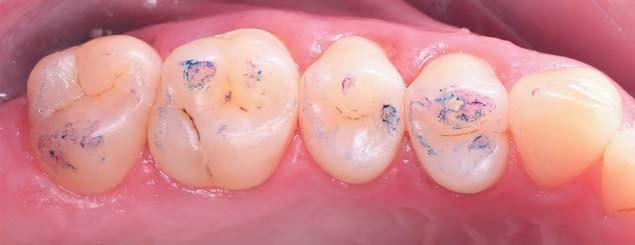
Література
- Радлинский С. В. Цифровая фотография и биомиметика // ДентАрт. – 2002. – N4. – С. 30-40.
- Wander P. A., Gordon P. D. Dental Photography.
- Радлинский С. В. Реставрационные конструкции переднего и бокового зубов // ДентАрт. – 1996. – N4. – С. 22-29.
- Feilzer A., De Gee A. J., Davidson C. L. Setting Stress in Composite Resin in Relation to Configuration of the Restoration // Journal of Dental Res. – 1987. – V.66. – P. 1636-1639.
- Summitt J. B., Robbins J. W., Schwartz R. S. Fundamentals of Operative Dentistry. – Carol Stream: Quintessence Publ. – 2001. – P. 286-293.
- Clark E. B. The color problem in dentistry. Den Dig 1931: 37-499, 571, 646, 732, 815.
- Vanini L, Mangani F. Determination and communication of color using the five color dimensions of teeth. Pract Proced Aesthet Dent 2001, 13:19-26.
- Rondoni D. The course of time in dental morphology. Int dent S Afr Australas Ed 2006; 1(2): 76-81.
- Yamamoto M. The Value Conversion System and a new concept for expressing the shades of natural teeth. Quintessence Dent Technol 1992; 15: 9-39.
- Dietschi D., Andru S., Krejci I. A new shading concept based on natural teeth color applied to direct composite restoration. Quintessence Int 2006: 37:91-102.
- Adolfi D. Natural esthetics. Chicago: Quintessence 2002: 83-90.